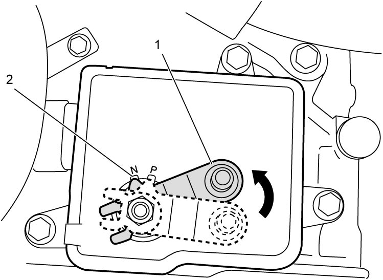
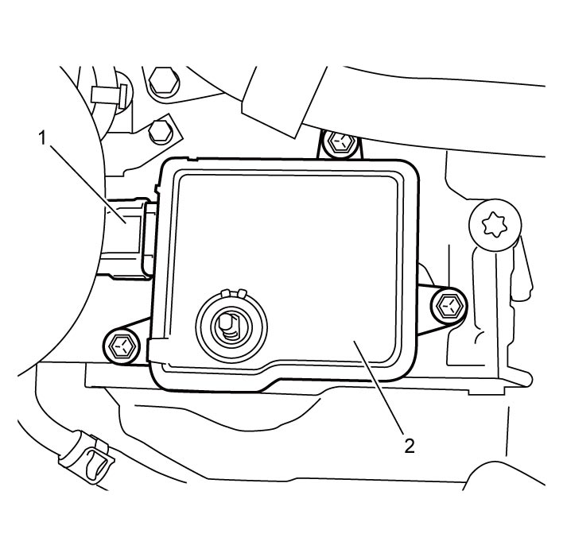
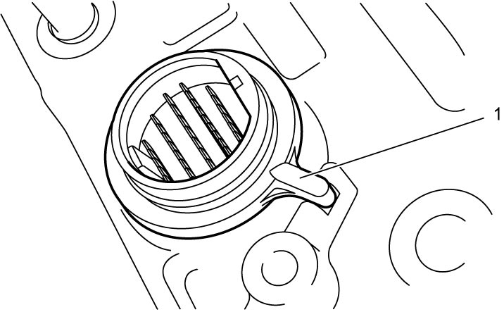
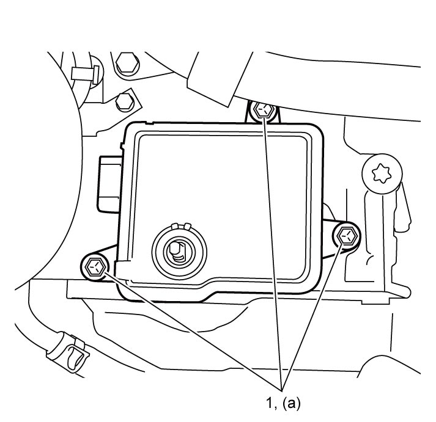
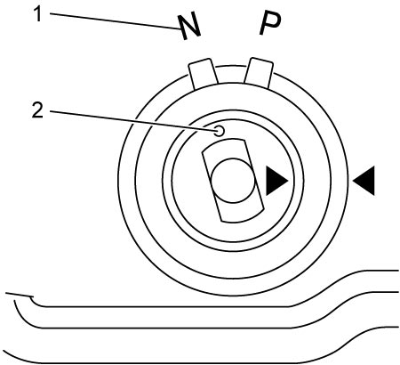
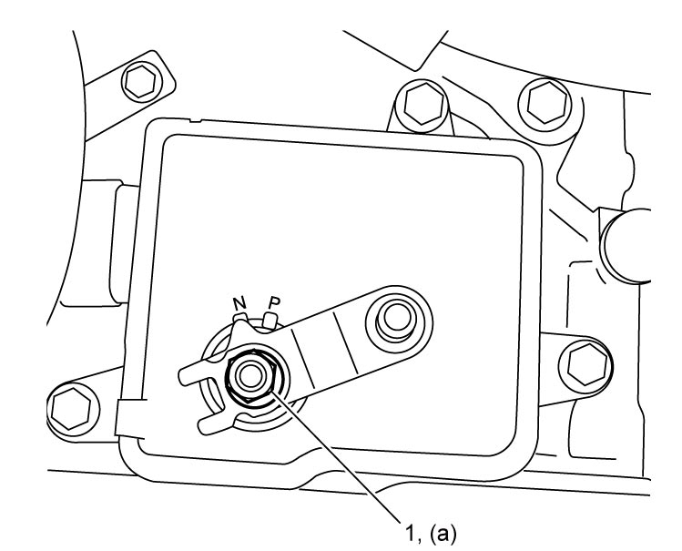

5A
| TCM Removal and Installation |
NOTICE:
As the TCM consists of precision parts, the TCM will be damaged if it is exposed to an excessively large impact.
Handle the TCM carefully so as not to impact it.
NOTE:
When TCM is removed or replaced, perform TCM Learning Value Clearance, Neutral Position Calibration and TCM Learning Value Initialization.
Removal
1)With select lever in P range, apply parking brake and block wheels.
2)Remove battery and battery bracket.
•M16A model: 
•K14C model:
•K14C model:
3)Disconnect select cable from manual select lever.
4)Move manual select lever (1) to “N” position (2), and then remove manual select lever.

NOTICE:
If torque is applied to the manual shaft when loosening the manual select lever nut, internal part of the A/T may be damaged.
Fix the manual select lever in place before loosening the manual select lever nut.

 "Expand image")
5)Disconnect connector (1) from TCM (2).
6)Remove TCM bolts, and then pull TCM straight up to remove it.

 "Expand image")
Installation
1)Install solenoid harness connector (1) to transaxle case correctly.

 "Expand image")
2)Install TCM by pushing it straight into transaxle case, and then tighten TCM bolts (1) to specified torque.

 "Expand image")
3)Check that “N” mark (1) is aligned with matchmark (2).
If not aligned, remove TCM, set manual shaft in “N” position, and then repeat Step 2) – 3).
If not aligned, remove TCM, set manual shaft in “N” position, and then repeat Step 2) – 3).

 "Expand image")
4)Connect connector to TCM.
5)Install manual select lever and tighten manual select lever nut (1) to specified torque.
NOTICE:
If torque is applied to the manual shaft when tightening the manual select lever nut, internal part of the A/T may be damaged.
Fix the manual select lever in place before tightening the manual select lever nut.

 "Expand image")
6)Apply grease to pins.
7)Install select cable to manual select lever.
8)Shift select lever to P range.
9)Install battery and battery bracket.
•M16A model:
•K14C model:
•K14C model:
10)Perform TCM Learning Value Clearance.
11)Perform Neutral Position Calibration.
12)Perform TCM Learning Value Initialization.